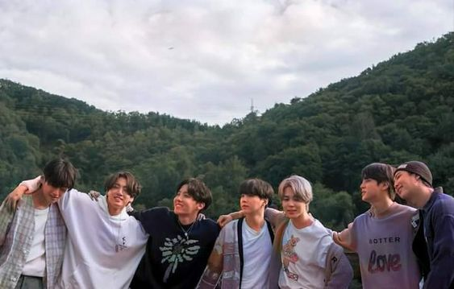
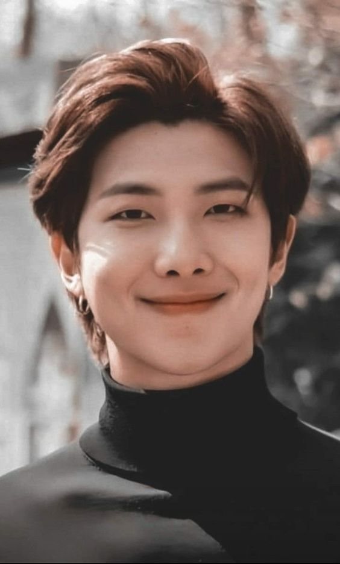
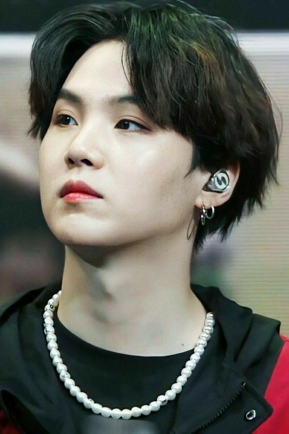
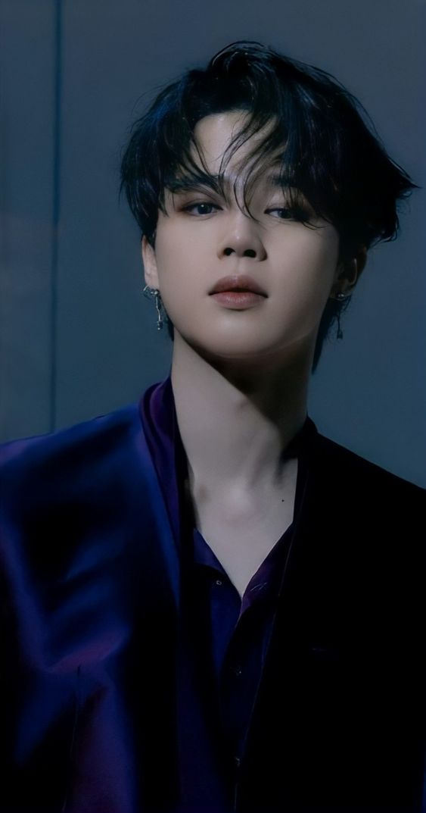
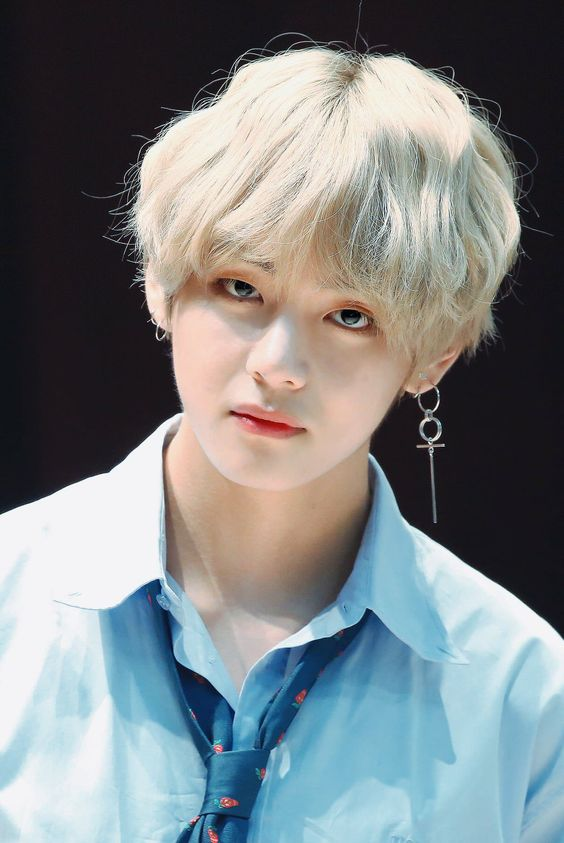
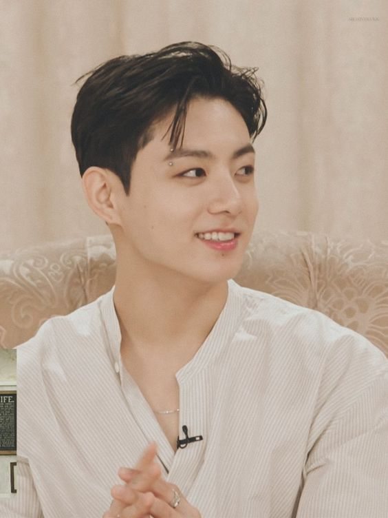

BTS is currently the most popular boy band in the world. There is no doubt that BTS is a hugely influential group.
BTS: Everything You Need to Know About the K-Pop Boy Band
WHO/WHAT IS BTS?
Big Hit Music (Korean: 빅히트 뮤직; formerly Big Hit Entertainment) is a South Korean entertainment company established in 2005 by Bang Si-hyuk. It was rebranded as Big Hit Music by its parent company Hybe Corporation, formerly Big Hit Entertainment Co. Ltd., in March 2021. Big Hit Music was divided from Hybe on July 1. As of that date, the company manages soloist Lee Hyun, and boy groups BTS and Tomorrow X Together—it is formerly home to soloist Lim Jeong-hee, and groups 8Eight, 2AM, and Glam.
BANGTAN SONYEONDAN
BTS (Korean: 방탄소년단; RR: Bangtan Sonyeondan), also known as the Bangtan Boys, is a South Korean boy band that was formed in 2010 and debuted in 2013 under Big Hit Entertainment.[5] The septet—consisting of members Jin, Suga, J-Hope, RM, Jimin, V, and Jungkook—co-writes and co-produces much of their own output. Originally a hip hop group, their musical style has evolved to include a wide range of genres. Their lyrics, often focused on personal and social commentary, touch on the themes of mental health, troubles of school-age youth and coming of age, loss, the journey towards loving oneself, and individualism. Their work also often references literature and psychological concepts and includes an alternative universe storyline.
RM – Leader, Main Rapper.
Jin – Vocalist, Visual.
Suga – Lead Rapper.
J-Hope – Lead Rapper, Main Dancer.
Jimin – Lead Vocalist, Main Dancer.
V – Vocalist.
Jungkook – Main Vocalist, Lead Dancer, Sub Rapper, Center/Face of the group, Maknae.
While BTS has made a name for itself as one of the biggest boy bands in history, there was a time when they were nobodies. When they first debuted, BTS and their agency, Big Hit Entertainment, were considered small players in the world of K-pop. As a result, they struggled to get recognised among their more established peers.
However, thanks to the members’ hard work and the support of the Army (the official BTS fan club), the seven members quickly gained popularity in Asia and the rest of the world. In a recent appearance on Korean variety show You Quiz on the Block, MC Yoo Jae-suk called their rise to fame “movie-like”.
The boys shared one dorm room until 2016. On multiple occasions, the members of BTS have shared stories about their first dorm, where all seven of them had to share one room and even one bathroom as trainees.
Despite selling out big stadiums today, BTS didn’t always have an easy time getting people to watch them perform. In an appearance on Korean reality show American Hustle Life, the members said they once had to hand out fliers along LA’s Hollywood Boulevard and invite passers-by to come to a free concert.
It's no secret that BTS has come a long way since their less than the glamorous debut. When BTS first took the stage, they said that they wanted to become "as successful as Big Bang." The public scoffed. Big Bang's domestic and international success had been impressive, to say the least, and it was difficult to imagine any group - worse yet a group not affiliated with the top 3 entertainment agencies (YG, SM, JYP) - living up to their standards.
But as we now know too well, BTS proved everyone wrong and made history by reaching highs that even Big Bang hadn't. The most notable part of their journey is their humble beginnings. Unlike many, if not all, k-pop groups that obtain this degree of popularity, BTS started from essentially nothing, having come from 'BigHit,' a small entertainment agency with not only limited resources and funds but also no previous record of creating a successful k-pop group.
That's how we know that these boys' success is accredited to nobody but themselves. It was hard work, persistence, resilience in addition to the love and support the members had for each other which led them to where they are now.
“To continue to share great memories with ARMY in 2022, we'll try our best to come back with an amazing song,” said V. The BTS singer continued, “And in 2022, I hope our members, ARMY, my family, and all my friends have a year full of happiness and good health.”
"I've had to accept that - that everyone cannot love me. Because when there's love, there's hate. When there's light, there's dark. But it was really hard to accept as an artist that there's a lot of people that hate me, but on the other side, there are many more people who love me. I think everyone goes through that." ~RM
"If you want to love others, I think you should love yourself first." ~RM
"Those who keep trying without giving up are the ones who succeed."~JIN
"Emotions are so different in every situation and every moment, so I think to agonize every moment is what life is." ~Suga
"Please don’t be afraid, don’t worry yourself. The end and beginning, beginning and end are connected." ~ Suga
"When things get tough, look at the people who love you! You will get energy from them." ~Jhope
"The music helped me sympathize with our young generation and also empathize with them. I'd like to create and write more music that represents them." ~Jhope
"Go on your path, even if you live for a day.” ~Jimin
"I hope you will never give up. Remember there is a person here in Korea, in the city of Seoul, who understands you." ~Jimin
"Don't be trapped in someone else's dream." ~V
"Purple is the last color of the rainbow. Purple means I will trust and love you for a long time." ~V
"Effort makes you. You will regret someday if you don’t do your best now. Don’t think it’s too late but keep working on it. It takes time, but there’s nothing that gets worse due to practicing. So practice. You may get depressed, but it’s evidence that you are doing good." ~ JK
"Living without passion is like being dead." ~JK
